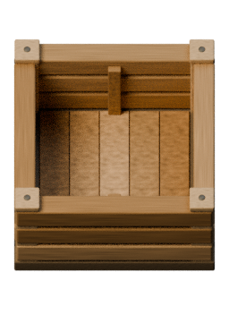
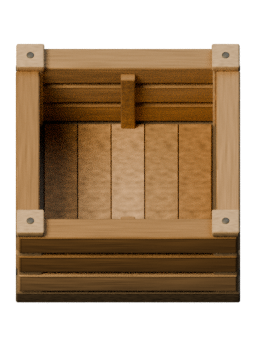
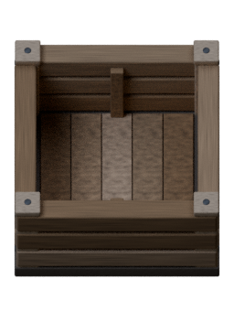

Unchanged editable source vs GLB imported alone after a Blender factory reset.
58° / yaw 0 · 224px cell · 256×352 body · (128,208) pivot. Lights are QA-only.



GLB contains only an identity root and wall mesh. Base color and normal atlases are embedded;
procedural detail is sampled at 1024² / 8-bit. Full procedural materials remain in the .blend.
Author evidence; independent Art QA and owner approval remain pending.